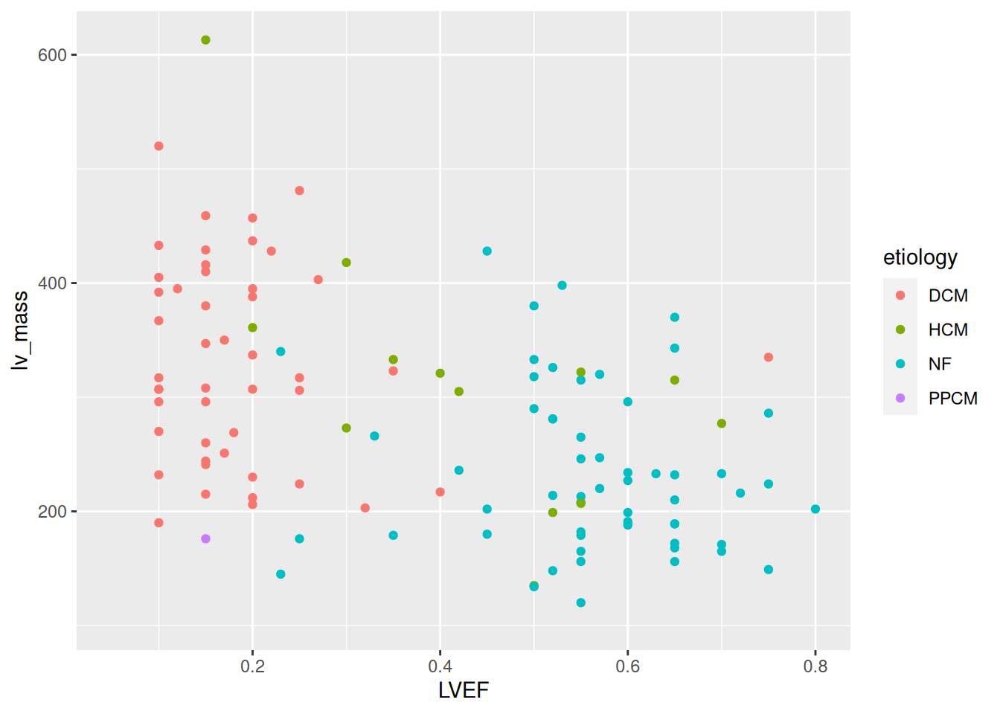
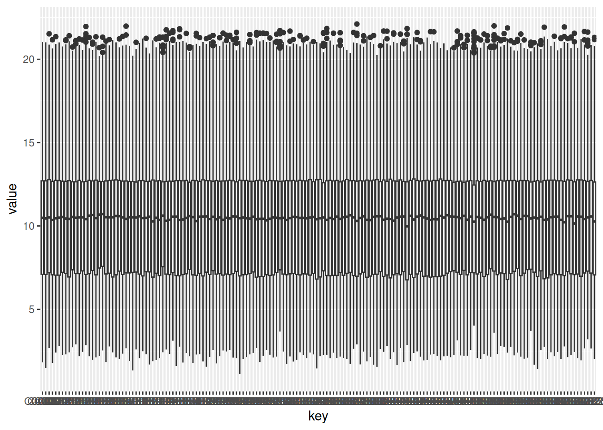
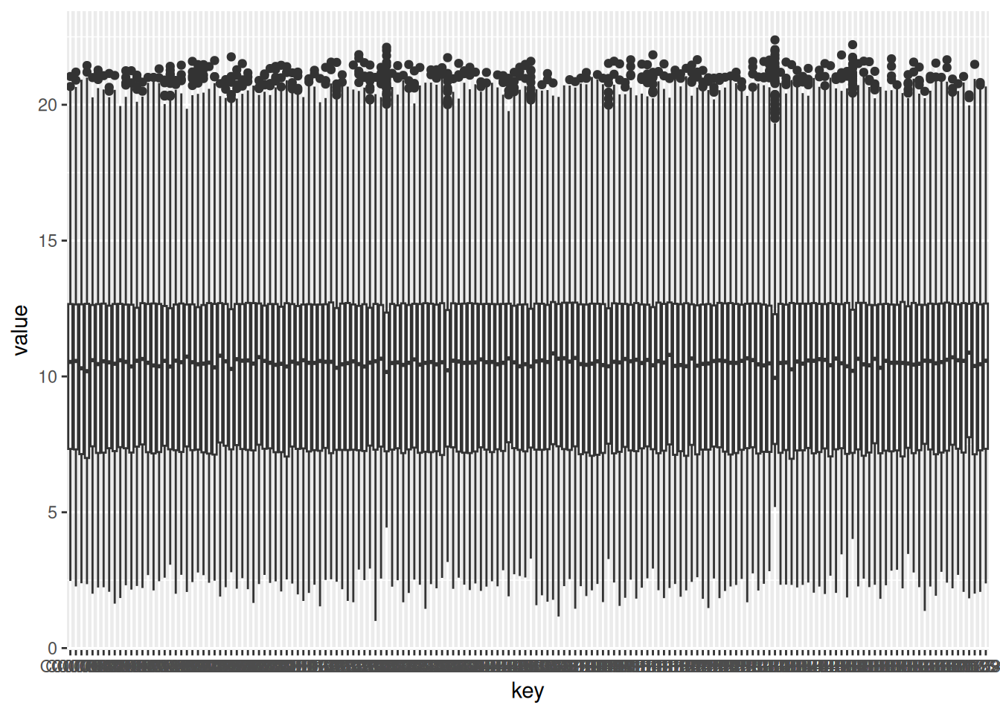
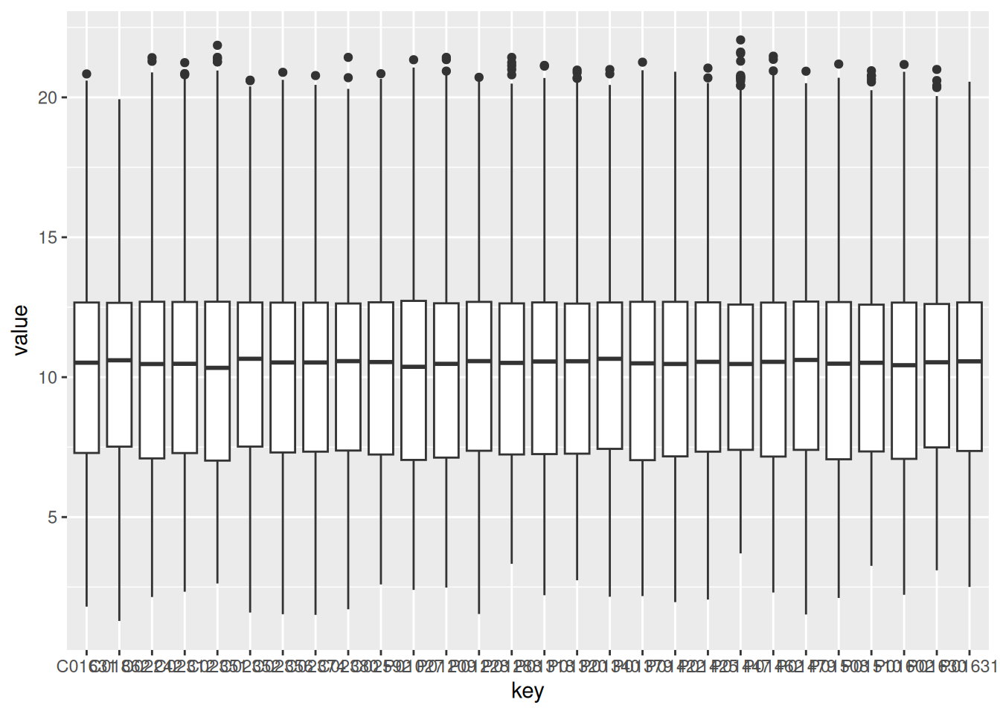
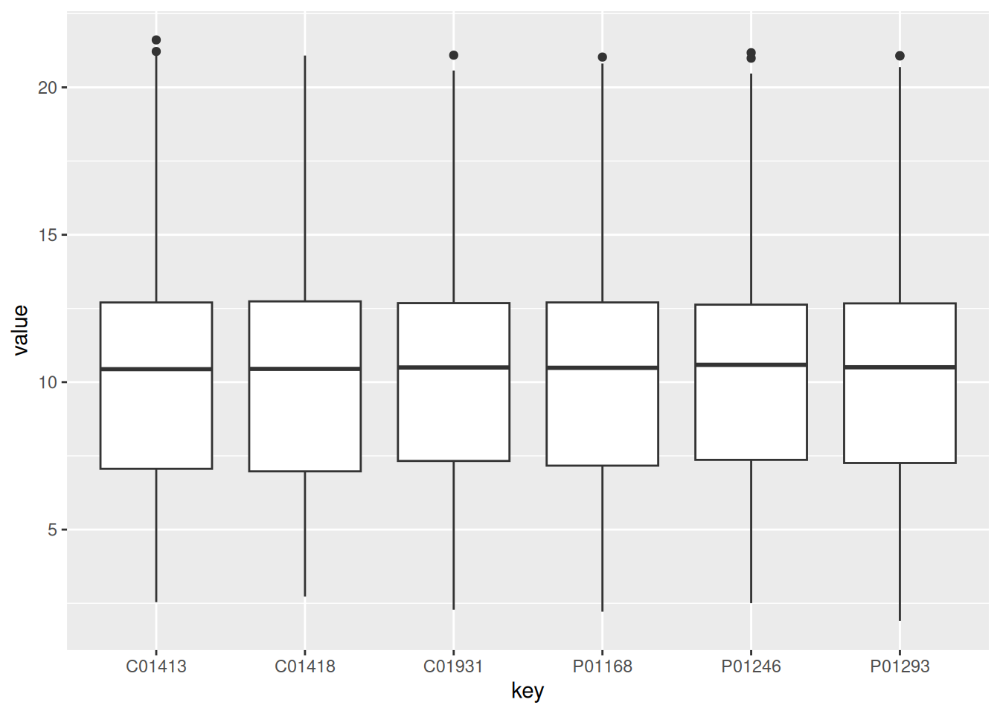
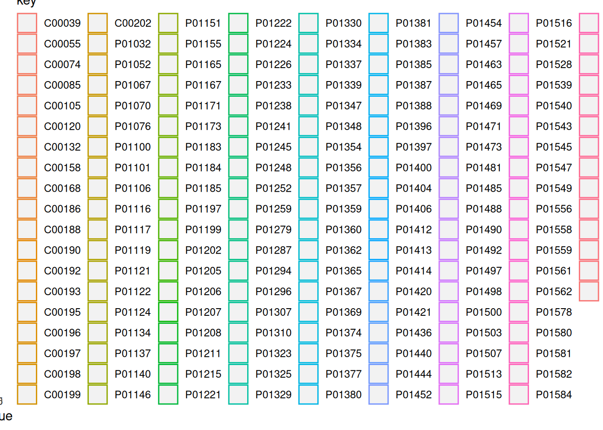
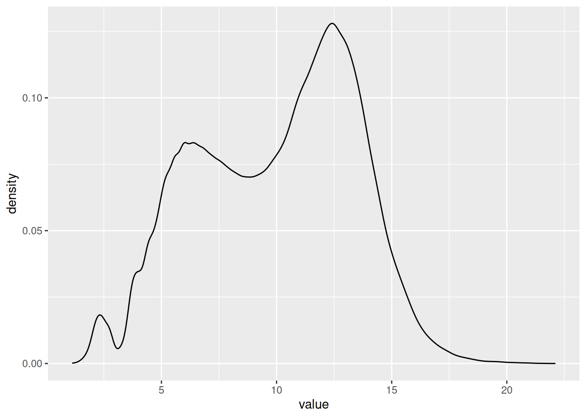
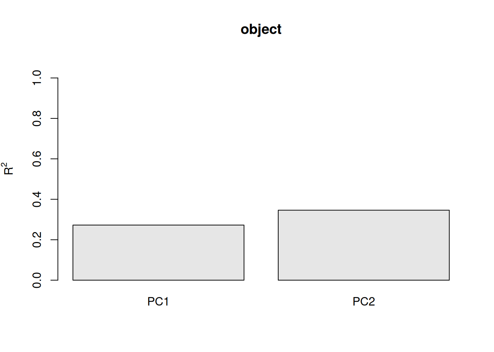
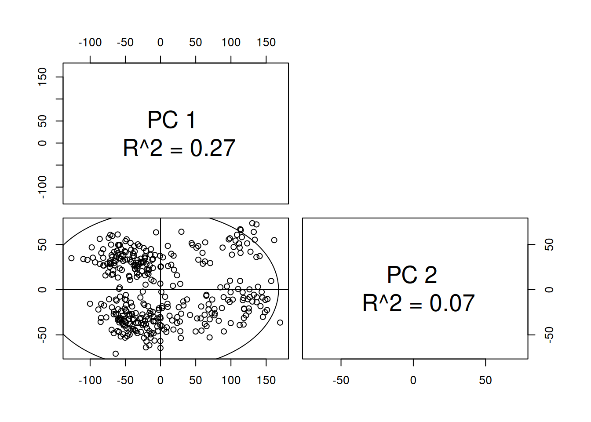
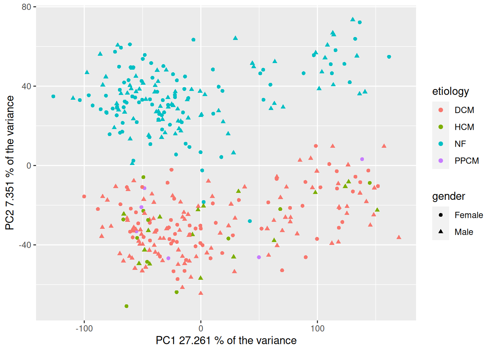

# Import libraries
library(ggplot2)
library(biomaRt)
library(pcaMethods)
library(readr)
library(dplyr)
library(tibble)
library(reshape2)
library(conflicted)
library(tidyr)
library(purrr)1 Week3 - Introduction to Gene expression analysis part 1
This R script serves as a scaffold for adding the code required to fulfill the assignments. It includes the assignments as well as a few hints.
Add the necessary code and type your answers in this document for your own record.
1.1 Assignment 1: Importing the data and inspecting sample information
After unzipping the required transcriptomics (gene expression) file and sample information file, import both files as two separate objects. First set the active working directory to the folder containing the files.
# Load data
gxData <- read_delim("Data/MAGNET_GeneExpressionData_CPM_19112020.txt", delim ="\t")
sampleInfo <- read_csv("Data/MAGNET_SampleData_18112022.csv")
# Add gene ID as the row names
gxData <- column_to_rownames(gxData, var = "EnsemblGeneID")
# Add sample name as the row names
sampleInfo <- column_to_rownames(sampleInfo, var = "sample_name")1.1.1 Using the sampleInfo object, answer the following questions: What does DCM, HCM and PPCM stand for? (hint: Google)
- DCM: Dilated cardiomyopathy
- HCM: Hypertrophic cardiomyopathy
- PPCM: Postpartum cardiomyopathy
1.1.2 How many co-variates are there? What do they mean? What type of value does each contain? (e.g. binary, continuous, categorical)
# Number of covariates
n_co_variates = ncol(sampleInfo)
# Types of variables of covariates
str(sampleInfo)'data.frame': 366 obs. of 19 variables:
$ tissue_source: chr "NF" "NF" "NF" "NF" ...
$ etiology : chr "NF" "NF" "NF" "NF" ...
$ gender : chr "Male" "Male" "Male" "Female" ...
$ race : chr "AA" "AA" "AA" "AA" ...
$ age : num 18 26 17 59 59 50 15 53 62 16 ...
$ weight : num 70 85 68 66 87 87 70 91 56 67 ...
$ height : num 175 183 173 157 157 175 183 165 168 163 ...
$ hw : num NA NA 400 380 NA 640 NA NA NA 256 ...
$ lv_mass : num NA NA NA NA NA NA NA NA NA NA ...
$ afib : chr "No" "No" "No" "No" ...
$ VTVF : chr "No" "No" "No" "No" ...
$ Diabetes : chr "No" "No" "No" "No" ...
$ Hypertension : chr "No" "No" "No" "Yes" ...
$ LVEF : num 0.37 NA 0.27 0.6 0.55 0.65 0.15 NA NA 0.51 ...
$ RIN : num 8.4 9.1 7.8 9.4 8.8 8.6 7.8 10 7.8 6.4 ...
$ Library.Pool : chr "Magnet_10" "Magnet_11" "Magnet_09" "Magnet_06" ...
$ disease_race : chr "AA_NF" "AA_NF" "AA_NF" "AA_NF" ...
$ minexpr : num 7.47 7.47 7.47 7.47 7.47 ...
$ TIN.median. : num 72.8 74.3 77.4 69.5 73.6 ...The number of co-variates is 19.
Covariates are variables known to affect disease susceptibility and are independent of tested genotypes at the population level. They are used to control for confounding factors in the analysis of the association between a disease and a genetic variant.
1.1.3 Are all variables measured in all individuals?
No, there are NA values in some columns, which means that these values were not measured.
na_values <- sampleInfo %>%
dplyr::select(everything()) %>%
summarise_all(list(~ sum(is.na(.))))
na_values tissue_source etiology gender race age weight height hw lv_mass afib VTVF
1 0 0 0 0 0 0 1 7 207 5 2
Diabetes Hypertension LVEF RIN Library.Pool disease_race minexpr TIN.median.
1 2 1 80 6 0 0 0 01.1.4 Using the sampleInfo object, create an overview of the sample sizes and characteristics in each disease category: How many individuals are healthy? How many suffer from DCM, HCM, PPCM?
Method 1
etiology1 <- sampleInfo %>%
dplyr::select(etiology) %>%
table()
etiology1etiology
DCM HCM NF PPCM
166 28 166 6 Method 2
etiology2 <- sampleInfo %>%
count(etiology)
etiology2 etiology n
1 DCM 166
2 HCM 28
3 NF 166
4 PPCM 6Method 3
etiology3 <- sampleInfo %>%
group_by(etiology) %>%
tally()
etiology3# A tibble: 4 × 2
etiology n
<chr> <int>
1 DCM 166
2 HCM 28
3 NF 166
4 PPCM 61.1.5 What is the average age in each disease category?
avg_etiology_by_age <- sampleInfo %>%
group_by(etiology) %>%
summarise(
n = n(),
age = mean(age, na.rm = TRUE)
)
avg_etiology_by_age# A tibble: 4 × 3
etiology n age
<chr> <int> <dbl>
1 DCM 166 52.1
2 HCM 28 48.7
3 NF 166 55.9
4 PPCM 6 34.71.1.6 How many male and female individuals are there in each disease category?
count_etiology_by_gender <- sampleInfo %>%
group_by(etiology) %>%
count(gender)
count_etiology_by_gender# A tibble: 7 × 3
# Groups: etiology [4]
etiology gender n
<chr> <chr> <int>
1 DCM Female 66
2 DCM Male 100
3 HCM Female 11
4 HCM Male 17
5 NF Female 89
6 NF Male 77
7 PPCM Female 61.1.7 Are there other characteristics that are strikingly different between groups?
summary(sampleInfo) tissue_source etiology gender race
Length:366 Length:366 Length:366 Length:366
Class :character Class :character Class :character Class :character
Mode :character Mode :character Mode :character Mode :character
age weight height hw
Min. :15.00 Min. : 27.00 Min. : 55.0 Min. :151.0
1st Qu.:48.00 1st Qu.: 66.00 1st Qu.:163.0 1st Qu.:371.5
Median :55.00 Median : 78.00 Median :170.0 Median :448.0
Mean :53.28 Mean : 81.19 Mean :168.7 Mean :468.8
3rd Qu.:62.00 3rd Qu.: 91.00 3rd Qu.:178.0 3rd Qu.:556.5
Max. :83.00 Max. :267.00 Max. :196.0 Max. :923.0
NA's :1 NA's :7
lv_mass afib VTVF Diabetes
Min. :104.0 Length:366 Length:366 Length:366
1st Qu.:195.0 Class :character Class :character Class :character
Median :247.0 Mode :character Mode :character Mode :character
Mean :266.0
3rd Qu.:321.5
Max. :613.0
NA's :207
Hypertension LVEF RIN Library.Pool
Length:366 Min. :0.0500 Min. : 5.800 Length:366
Class :character 1st Qu.:0.1500 1st Qu.: 8.100 Class :character
Mode :character Median :0.2000 Median : 8.500 Mode :character
Mean :0.3068 Mean : 8.451
3rd Qu.:0.5200 3rd Qu.: 8.900
Max. :0.8000 Max. :10.000
NA's :80 NA's :6
disease_race minexpr TIN.median.
Length:366 Min. :7.469 Min. :23.38
Class :character 1st Qu.:7.469 1st Qu.:61.26
Mode :character Median :7.469 Median :70.12
Mean :7.469 Mean :65.03
3rd Qu.:7.469 3rd Qu.:73.32
Max. :7.469 Max. :81.52
An example of two features that are different between groups:
ggplot(sampleInfo, aes(x= LVEF, y = lv_mass, color = etiology)) +
geom_point()
1.2 Assignment 2: Data exploration on the sample level
1.2.1 The gene expression dataset contains so-called log2-transformed CPM (counts per million) values: How are CPM values created from raw RNA-sequencing count data? And why is this needed? (HINT: Google “what the fpkm”)
FPKM stands for fragments per kilobase of exon per million mapped fragments. It is used specifically in paired-end RNA-seq experiments. The interpretation of FPKM is that if you sequence your RNA sample again, you expect to see for gene i, FPKMi reads divided by gene i length over a thousand and divided by the total number of reads mapped over a million.
1.2.2 Create and interpret 4 figures containing boxplots for all samples in the dataset, one for DCM, one figure for HCM, one for PPCM and one for the healthy controls.
Create dataframes with information of the samples in each disease category.
# Create a vector of the names of etiologies
names_et <- etiology2$etiology
# Get the names of the samples per etiology
for (i in names_et){
# Define the name of the dataframes with the list of samples per etiology
var_name <- paste(i,"columns",sep = "_")
# Get the dataframes with the list of sample names per etiology
df <- rownames_to_column(sampleInfo, var = "sample") %>%
dplyr::filter(etiology == i) %>%
dplyr::select(sample) %>%
pull(sample)
# Assign the names to the dataframes
assign(var_name, df)
}1.2.2.1 Boxplot of NF patients
NF_data <- gxData %>%
dplyr::select(NF_columns)
NF_data_group <- gather(NF_data) # melt also works, but it is deprecated
ggplot(NF_data_group, aes(x = key, y = value)) +
geom_boxplot()
1.2.2.2 Boxplot of DCM patients
DCM_data <- gxData %>%
dplyr::select(DCM_columns)
DCM_data_group <- gather(DCM_data) # melt also works, but it is deprecated
ggplot(DCM_data_group, aes(x = key, y = value)) +
geom_boxplot()
1.2.2.3 Boxplot of HCM patients
HCM_data <- gxData %>%
dplyr::select(HCM_columns)
HCM_data_group <- gather(HCM_data) # melt also works, but it is deprecated
ggplot(HCM_data_group, aes(x = key, y = value)) +
geom_boxplot()
1.2.2.4 Boxplot of PPCM patients
PPCM_data <- gxData %>%
dplyr::select(PPCM_columns)
PPCM_data_group <- gather(PPCM_data) # melt also works, but it is deprecated
ggplot(PPCM_data_group, aes(x = key, y = value)) +
geom_boxplot()
1.2.3 Create and interpret 4 figures containing density plots for all samples in the dataset, one figure for DCM, one for HCM, one for PPCM and one for the healthy controls.
1.2.3.1 Density plot of all the values from the NF group colored by sample
ggplot(NF_data_group, aes(x = value, color = key)) +
geom_density(alpha = 0.2)
1.2.3.2 Density plot of all the values from the NF group
ggplot(NF_data_group, aes(x = value)) +
geom_density()
The same code applies for the pther groups
1.2.4 Assess the normality of all samples and summarize the results in a table or figure. (HINT: try ‘shapiro.test’)
# Get random sample for all the samples
norm_df <- sample_n(gxData, 5000) %>%
#slice(gxData, 5000:8000) %>%
sapply(., shapiro.test) %>%
as_tibble() %>%
slice(2) %>%
gather(sample, p_value) %>%
mutate(normality = p_value < 0.05)
norm_df %>%
count(normality)# A tibble: 1 × 2
normality n
<lgl> <int>
1 TRUE 3661.2.5 Perform a principal component analysis (PCA), visualize the results and color by the disease category, sex and other variables of interest. Interpret the results: what patterns do you see?
HINT: use the functions ‘pca’ and ‘plotPcs’ from the package ‘pcaMethods’
1.2.5.1 Calculate the PCAs
# Transpose dataframe to merge with the metadata
t_gxData <- t(gxData)
# Calculate pca
pca_hf <- pca(t_gxData, method = "svd")1.2.5.2 Summary and barplot of the number of instances in the PCAs
# Get a short summary on the calculated model
summary(pca_hf)svd calculated PCA
Importance of component(s):
PC1 PC2
R2 0.2726 0.07351
Cumulative R2 0.2726 0.34612plot(pca_hf)
1.2.5.3 Merge pca scores with metadata for plotting
# Merge pca scores with metadata
df_hf <- merge(scores(pca_hf), sampleInfo, by = 0)1.2.5.4 Plot the PCAs with the default them of plotsPcs
## Create scatteplot of the PCA with ggplot version 2
plotPcs(pca_hf)
1.2.5.5 Plot the PCAs with ggplot
## Create scatteplor of the PCA with ggplot version 1
ggplot(df_hf, aes(PC1, PC2, shape=gender, color=etiology)) +
geom_point() +
xlab(paste("PC1", pca_hf@R2[1] * 100, "% of the variance")) +
ylab(paste("PC2", pca_hf@R2[2] * 100, "% of the variance"))